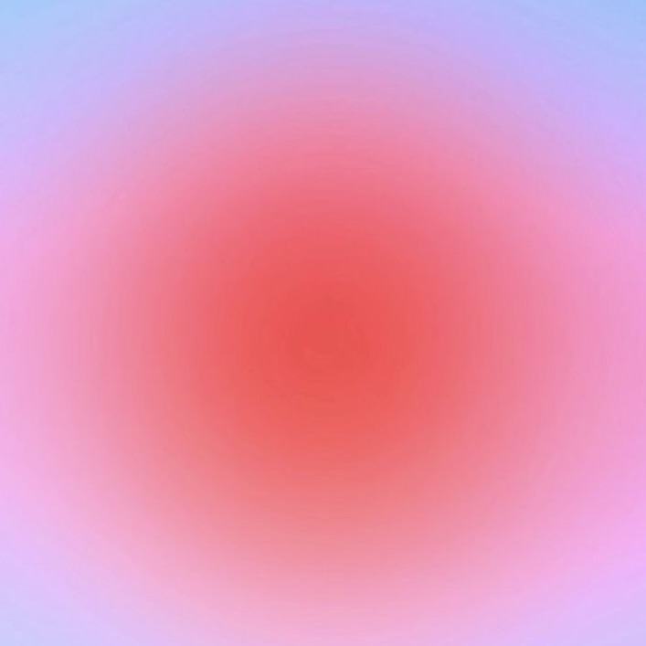

Lab 10 - JavaScrip Events and Forms
Subject
The purpose of the lab is to experiment with Events and Forms.
Challenges
One challenge I had while working on this lab was linking the output. I used as reference Wes' website when creating my JavaScrip file. I got the button to work, but I wasn't able to see the results once I type my name.
Results
You are looking at my index.html file and js script output: